The Mission
ELI5 is a concept-driven learning app that helps users understand any topic as if it were explained to a five-year-old. We focus on clarity, curiosity, and conceptual understanding over memorization.
Key Objectives
Does a Five-Year-Old Get It?
If the explanation isn't simple enough, it's not ready. We start from clarity and don't let complexity creep back in.
Does Every Element Earn Its Place?
No filler, no decorations that don't teach. Each tile exists because it helps someone understand better.
Would You Follow the Thread?
Curiosity is the engine. We reward exploration over completion — learning should pull you deeper, not check boxes.
Does It Feel Light?
If it feels like homework, we failed. The whole interface is tuned to reduce intimidation and invite play.
Success Criteria
Understood in Seconds
Grasp a hard concept on the first pass — no re-reading, no squinting, no waiting for it to click later.
Approachable, Not Overwhelming
The interface wraps you in curiosity instead of drowning you in density. It should feel like a playground, not a textbook.
Follow the Thread
You follow what fascinates you, not a rigid sequence. The system bends to your curiosity, not the other way around.
Sticks Days Later
A metaphor you remember a week later beats a fact you memorized five minutes ago. Visual anchors seal the deal.
The Barriers to Learning
The internet provides unlimited access to information, but understanding still lags. Most platforms optimize for delivery, not comprehension.
Primary User Challenges
- Information overload across platforms creates confusion.
- Text-heavy interfaces drain mental energy.
- Hard to know where to start with a new topic.
- Jargon puts up immediate mental walls.
Key Findings
Information Is Fragmented
Learning across 14 tabs and 3 platforms does not build a mental model. It builds noise and confusion.
Cognitive Load Kills Comprehension
A wall of text is not information. It is noise. The brain shuts down when there is no place to rest.
Visuals Are the Shortcut
People remember what they see and touch. Text alone is the weakest link in the learning chain.
How might we create a learning experience that helps users understand concepts without intimidation?
Building Intuitive Models
To solve the comprehension gap, we applied Cognitive Load Theory to our information architecture.
Cognitive Chunking
Every topic gets sliced into modular concept tiles. One tile, one idea. No bleed, no overwhelm — just clear boundaries around each thought.
Exploration > Completion
No forced paths, no rigid curricula. The architecture bends to support wandering, following threads, and stumbling into understanding.
Metaphor-First Translation
Every abstract concept gets a real-world anchor before any academic language appears. This simple swap is the core of ELI5. Explain it to a kid, and only then call it by its name.
The Bento Learning System
The core interaction system uses modular tiles that each explain a concept from a different angle.
ELI5 Mode
A global toggle that rewrites academic text into metaphor-driven explanations on the fly.
Visual Metaphors
Every abstract idea gets a visual anchor, making the invisible tangible and the complex intuitive.
Connected Keywords
Inline links that jump to related concepts so learning never dead-ends. Follow the thread anywhere.
Multi-Perspective System
Video, text, and interactive tiles converge on the same concept from different angles, building a complete mental model.
The Complete Presentation
The ELI5 concept presentation from core mission to final application flow.
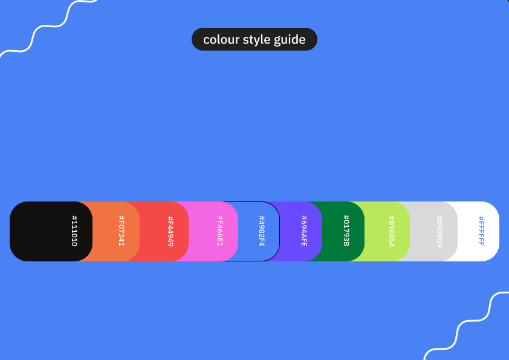
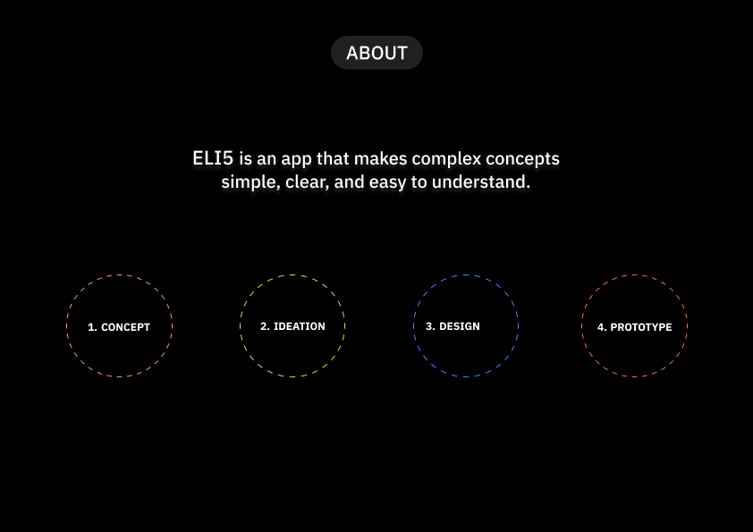
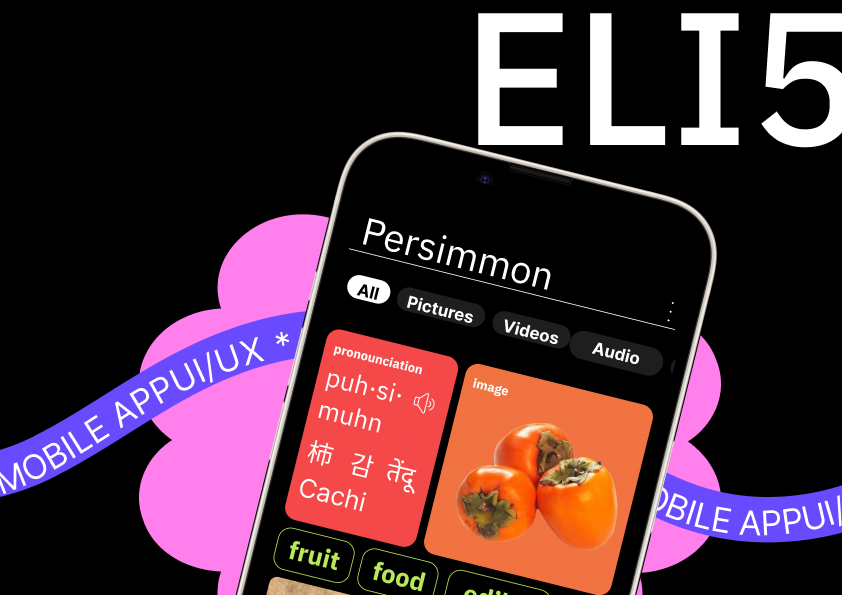
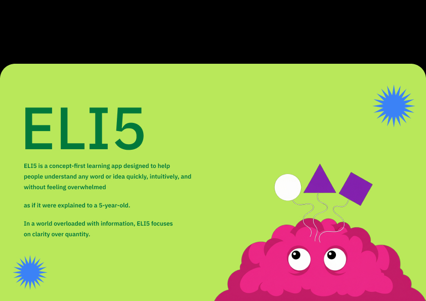
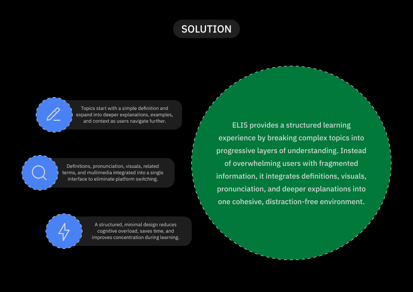
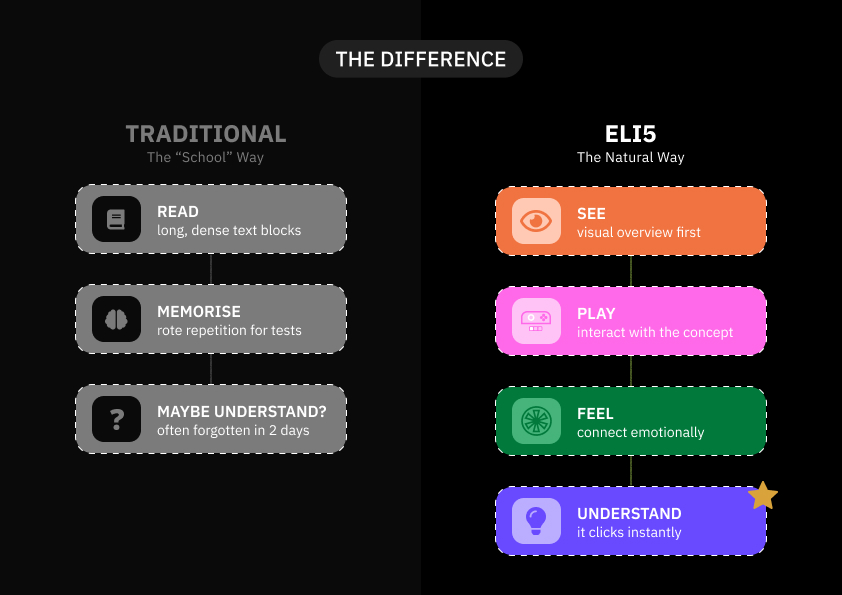
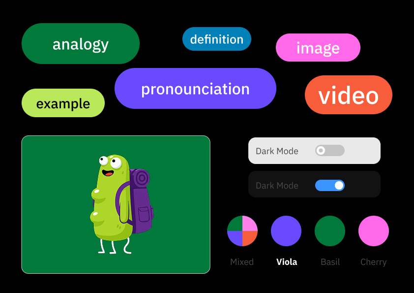
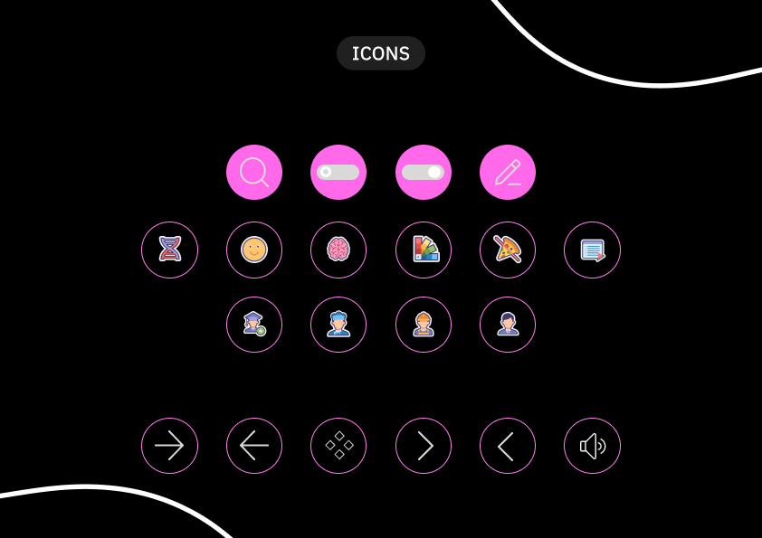
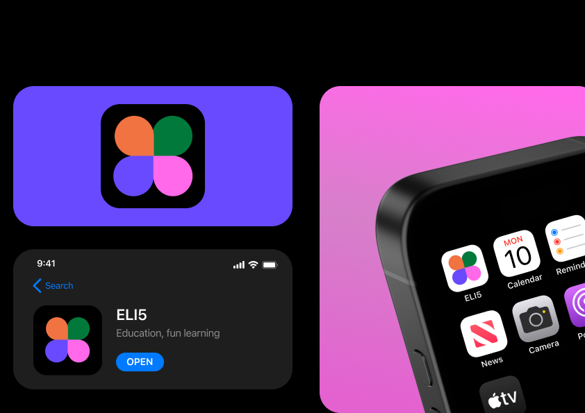
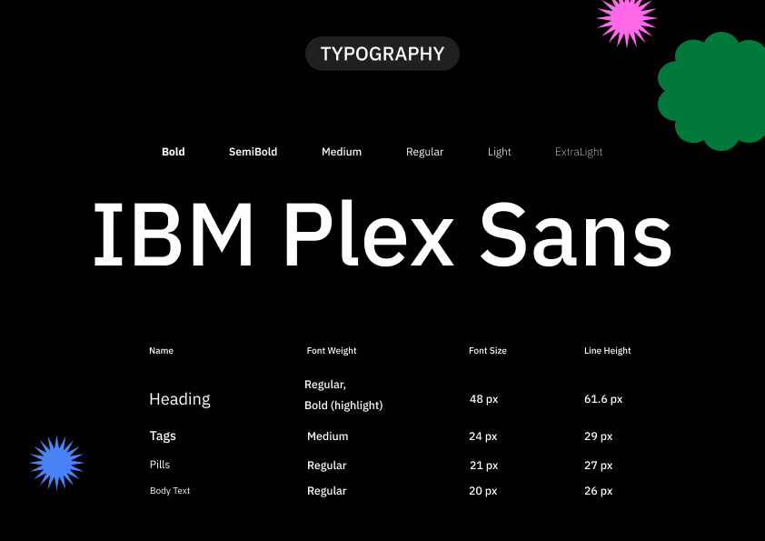
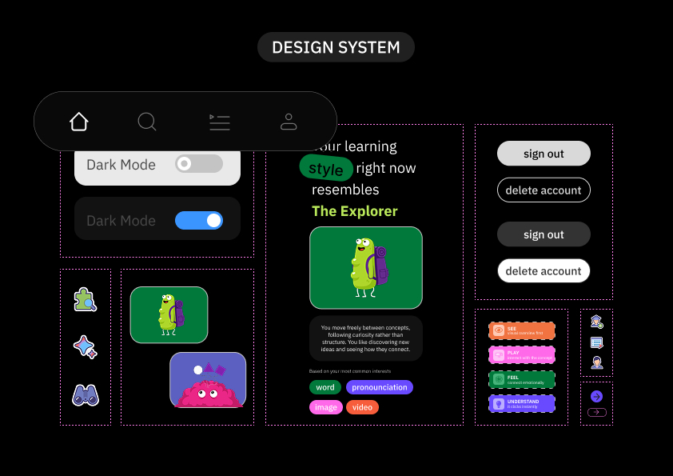
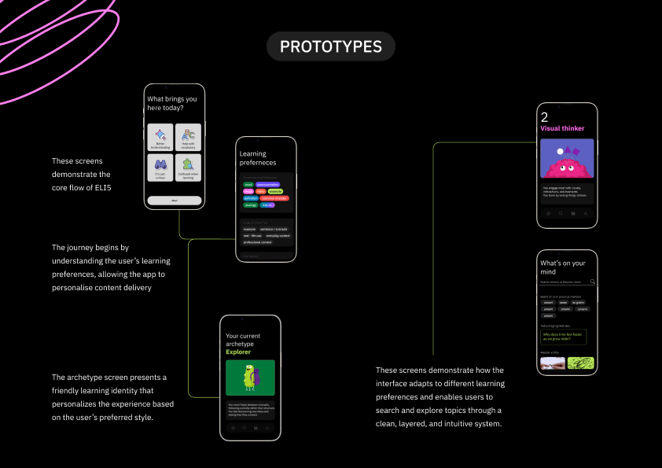
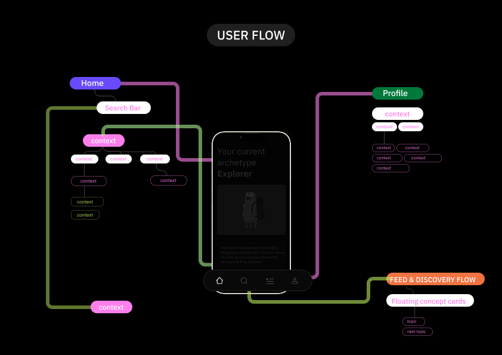
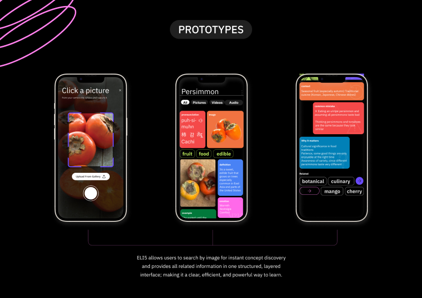
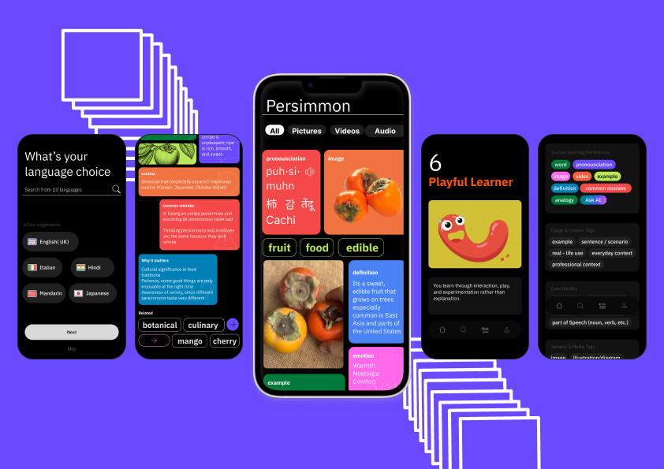
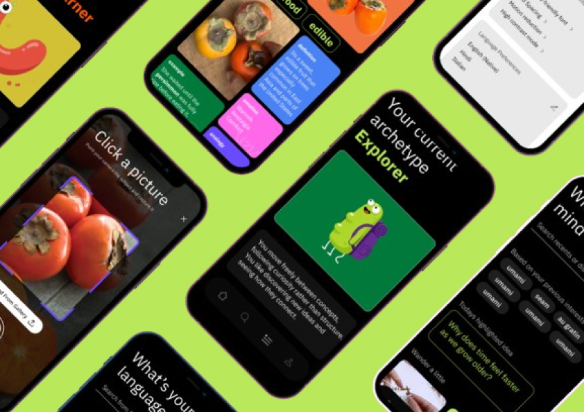
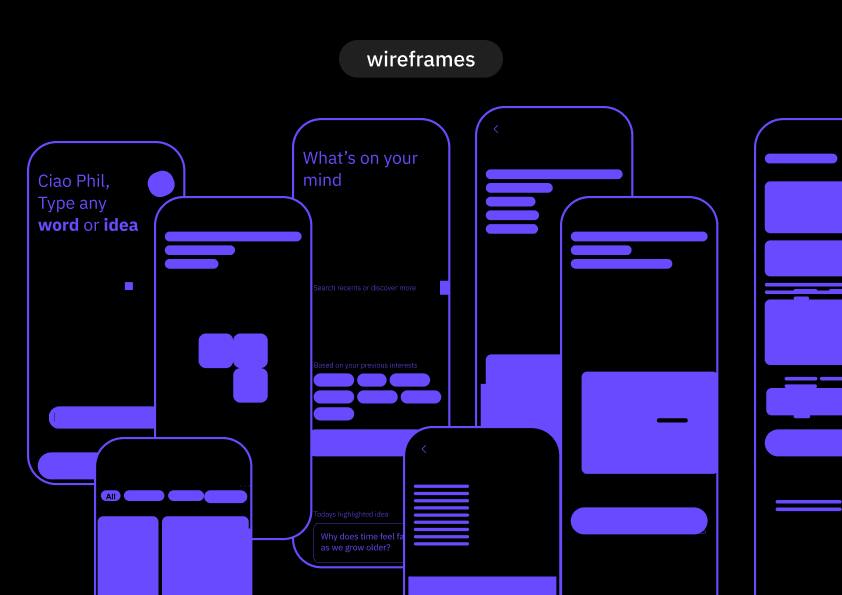
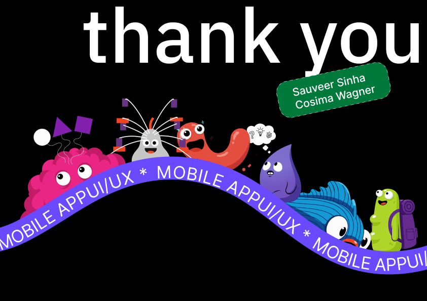
Key Takeaways
Simplicity Requires Intentional Design
Making complex concepts feel simple requires careful hierarchy, clarity, and restraint at every level.
Understanding Is Emotional
People disengage not because they lack intelligence but because interfaces overwhelm them.
Visual Systems Improve Comprehension
Modular visual components create faster mental models and stronger retention.
Curiosity Over Pressure
Removing grades and rigid structures creates an inviting, exploratory learning environment.
Closing Thoughts
ELI5 explores how design can transform learning from overwhelming to intuitive. Through visual thinking, modular interaction, and playful exploration, it shows how digital products can make people feel confident and connected to knowledge.